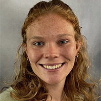

The UW ISeqU study is a research project at the University of Washington and Harborview Medical Center using rapid whole-genome sequencing to better understand and improve care for critically ill adults.
Our goal is to determine how genomic information can support and guide real-time clinical decision-making in acute care settings.
This study is conducted under approval from the University of Washington Institutional Review Board (IRB).
Participation is voluntary and does not replace standard clinical care.
Thank you for participating in the UW ISeqU study.
We are currently in the enrollment phase for our pilot study (2026–2027) and anticipate releasing a first round of study results on this page in 2028.
If you have any questions about participation, please contact us at uwisequ@uw.edu.
FACULTY
Laboratory Medicine and Pathology & Pediatric Genetic Medicine
RESEARCH COORDINATOR
Laboratory Medicine and Pathology & Pediatric Genetic Medicine

RESEARCH GENETIC COUNSELOR
Laboratory Medicine and Pathology & Pediatric Genetic Medicine
ASSOCIATE PROFESSOR
Medical Genetics
PROFESSOR
Medical Genetics
ASSOCIATE PROFESSOR
Medical Genetics & Genome Sciences
ASSOCIATE PROFESSOR
Pulmonary, Critical Care and Sleep Medicine
PROFESSOR
Cardiology
Study results are not yet available. This page will serve as the public record for updates and publications related to the UW ISeqU study.
We anticipate sharing initial findings in 2028.